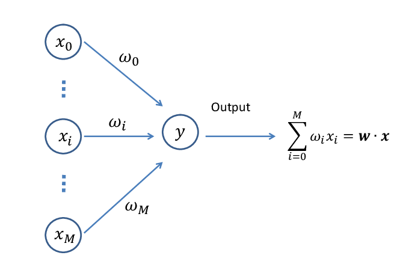

Designing Weighted Associative Classifiers
My latest research project with Dr. Hahsler could less politely be called "stealing the concepts that work for neural networks and hoping that they work when we apply them to association rules." For those unfamiliar with association rules, classification, and neural networks, let me give some background. For those of you who already are familiar, feel free to skip the next two sections.
Association Rules
Association Rules are a simple way of finding patterns in data. The draw of association rules is that they distill a large amount of information into a coherent and easy to understand rule.
For example, let's pretend that we're a grocery store interested in finding out what items are commonly purchased together. If we know that customers who buy item A are more likely to buy item B, we can use this information to stock item A and item B next to each other. This was actually one of the first use-cases of association rules. Allegedly, a grocery store gathered information on 1.2 million shopping carts and used association rules to find that customers who buy diapers also tend to buy beer! This somewhat odd association rule is written as \(\{diapers \Rightarrow beer\}\). We would say the the Left hand side (LHS) of this rule is \(diapers\), and the Right hand side (RHS) is \(beer\).
Classification
Although the probably apocryphal story about the beer and diapers is entertaining, it's not really what I do with association rules. My goal is to use these rules for a task machine learning people call classification. The classification problem is as follows: if we have a bunch of information about an item (such as the groceries in a grocery cart), can we put that item in a certain category (for example, what is the income of the person pushing the cart)?
There are essentially two parts to a classification task: the input variables and the class variables. In this case the input variables are the information about the shopping cart. We might have one variable that details how many items are in the cart, and another variable that tells the price of each item in the cart. The class variables are what we try to find using this information. In this case, maybe we have "high income," "middle income," and "low income" as our income levels.
Associative Classification
Since association rules find patterns in data, and classification is concerned with patterns that lead to class variables, association rules can naturally be used for classification. Essentially, the idea is you find rules that have a class variable in the RHS, and you can use these rules to classify different things. For example:
- \(\{truffle\text{ } oil,salmon\}\Rightarrow\{high\text{ } income\}\)
- \(\{hamburger\text{ } helper,ramen\}\Rightarrow\{low\text{ } income\}\)
These two rules would be able to classify someone who buys both truffle oil and salmon as high income, and someone who buys both hamburger helper and ramen as low income. There are a variety of algorithms that employ association rules for classification, including CBA, CPAR, and CMAR. My goal is to make more accurate classifications than do these algorithms.
Neural Networks
As the first sentence of this post suggests, my proposed method will be stealing everything possible from neural networks. To dramatically oversimplify, neural networks essentially take in a bunch of input data, assign each input a different weight, and do a weighted vote to see which class gets predicted for the given item being classified. The "secret sauce" that makes neural networks work so well is that they look at more and more training examples, updating the weights over and over again.
Today's neural networks are generally "deep," but the architecture I'm ripping off for this project is "shallow" because there is only one layer. In deep architectures there are a variety of layers, which means that inputs are processed into a function, which is further processed into another function, and so on. For a variety of technical reasons that I won't get into here I don't use multiple layers in my approach to associative classification.
Putting it All Together
Now that we have a bit of background on association rules, the problem of classification, and single layer neural networks, we can discuss how I combine these topics in my research. Essentially, Dr. Hahsler and I beleive that the existing algorithms for associative classification are too limited in that they deal with a small number of rules at a time. These algorithms were developed in the early 2000s, when computers had Megabytes of RAM. Today's machines are capable of much more difficult computations, and because of abusing the power of GPUs the neural network operations that I shamelessly steal are highly efficient in 2018. Therefore, we decided to use some of these operations from neural networks to design more powerful associative classifiers.
In brief, the issue that current classifiers have (most of them anyway; this is an over-generalization) is that they don't look at or use enough rules. By assigning each rule a weight and using as many rules as we may need to make accurate predictions, we can leverage rules that other algorithms would pass over because they don't apply to enough training examples (so-called "low support" rules). Our approach has two main benefits over the current classifiers.
- Our classifier can make more accurate predictions than the existing classifiers, presumably because we consider more rules, and we use a well-tested process for weight assignment that is highly optimal.
- Our classifier can make faster classifications than the existing classifiers. It takes much longer to train, but much less time to classify; this is because our method allows for selecting the very best rules and only using those when it's time to classify.